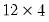
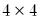
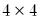
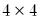

@kronecker Matrix Utility Kronecker product. Syntax: @kronecker(m1, m2) m1: matrix, vector, sym m2: matrix, vector, sym Return: matrix Calculates the Kronecker product of the two matrix objects, m1 and m2. The resulting matrix has a number of rows equal to the product of the numbers of rows of the two matrix objects and a number of columns equal to the product of the numbers of columns of the two matrix objects. The elements of the resulting matrix consist of submatrices consisting of an element of the first matrix object multiplied by the entire second matrix object. Examples matrix k4 = @kronecker(@fill(1, 2, 3), @ones(4, 4)) generates the  matrix formed by taking the Kronecker product of the 3 element vector and the matrix of ones. The matrix is a vertical concatenation of a matrix of ones, a matrix of twos, and a  matrix of 3s. Cross-references See also @identity and @vec.


 matrix of ones. The matrix is a vertical concatenation of a
matrix of ones. The matrix is a vertical concatenation of a  matrix of ones, a
matrix of ones, a  matrix of twos, and a  matrix of 3s.
matrix of twos, and a  matrix of 3s.